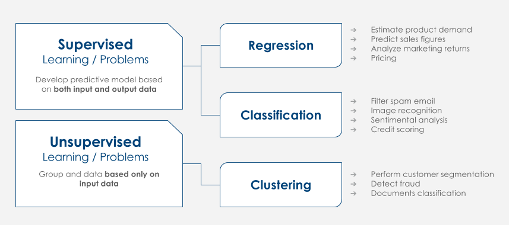

Capítulo 2 Tipos de Problemas

En bastante común que los algoritmos de Machine Learning en aprendizaje supervisado y aprendizaje no supervisado. Esta misma clasificación se menciona en la sección 2.1, las herramientas de statistical learning. Este tipo de clasificación responde al tipo de problema e información que disponemos del output, por ello, en este Manual generalizamos esta clasificación y la denominamos Tipo de Problema Analítico que debemos afrontar.
Problema / Aprendizaje Supervisado
En el aprendizaje supervisado, cada dato, unidad analizada u observación está etiquetada o asociada con una categoría o valor de interés. Ejemplos:
- Una imagen es etiquetada como un ‘gato’ o ‘perro’.
- Un cliente es etiquetado como ‘propenso’ o ‘no propenso’ al uso del canal digital.
- El precio de venta asociado a un coche usado, es una etiqueta de valor.
El objetivo del aprendizaje supervisado es estudiar muchos ejemplos etiquetados y, luego, poder realizar predicciones sobre los datos futuros. Por ejemplo, identificar nuevas fotografías con el animal correcto, identificar clientes a clientes facilitar el uso de la banca online o asignar precios de venta precisos a otros coches usados.
El aprendizaje supervisado usa técnicas de clasificación y regresión para desarrollar modelos predictivos.
Las técnicas de clasificación predicen respuestas discretas —por ejemplo, saber si un correo es genuino o spam, o si un tumor es benigno o maligno. Los modelos de clasificación categorizan los datos de entrada. Entre las aplicaciones típicas se incluyen imágenes médicas, reconocimiento de voz o puntaje crediticio. Cuando hay sólo dos opciones, se denomina clasificación de dos clases o binaria. Cundo hay más categorías, se denomina clasificación multiclase o multinomial.
- En algunos casos la detección de anomalías se considera una técnica adicional de clasificación. En la detección de fraude, por ejemplo, los patrones de gasto de tarjeta de crédito muy poco habituales son sospechosos. Las posibles variaciones son tan numerosas y los ejemplos de formación son tan pocos, que no es posible saber de qué actividad fraudulenta se trata. El enfoque que toma la detección de anomalías es simplemente aprender qué puede considerarse como actividad normal (haciendo uso de las transacciones no fraudulentas del historial) e identificar todo lo que sea significativamente diferente2.
Las técnicas de reducción de dimensionalidad ayudan a disminuir la complejidad de los problemas debida al gran volumen de datos. Cuando mayor es el conjunto de datos, mayor la necesidad de reducir el número de variables (features) que se quieren analizar.
Las técnicas de regresión predicen respuestas continuas —por ejemplo, cambios en la temperatura o fluctuaciones en la demanda de energía. Las aplicaciones típicas pueden ser previsión del recurso eléctrico o trading algorítmico.
Problema / Aprendizaje No Supervisado
En el aprendizaje no supervisado, los datos no tienen etiquetas asociadas a ellos. En este caso, el objetivo es organizar los datos de alguna manera o describir su estructura. Esto puede significar agrupar clientes en segmentos, o buscar diferentes maneras de examinar datos complejos para que parezcan más simples.
El aprendizaje no supervisado se utiliza en análisis exploratorio de datos para encontrar características ocultas y agrupar. Las aplicaciones del clustering incluyen análisis de secuencias genéticas, investigación de mercado y reconocimiento de objetos.